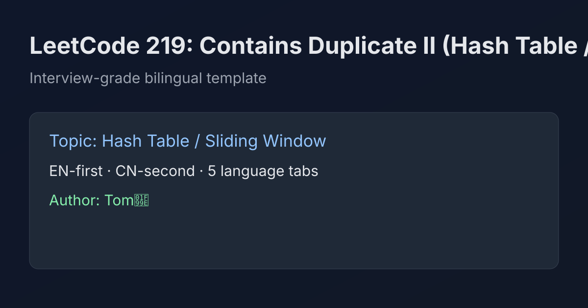

LeetCode 219: Contains Duplicate II (Last-Seen Index Map)
LeetCode 219Hash TableSliding WindowToday we solve LeetCode 219 - Contains Duplicate II.
Source: https://leetcode.com/problems/contains-duplicate-ii/

English
Problem Summary
Given an integer array nums and an integer k, return true if there exist two different indices i and j such that nums[i] == nums[j] and |i - j| <= k.
Key Insight
For each value, only the most recent index matters. If we see the same value again at index i, we just check distance to its last index prev. If i - prev <= k, we can return immediately.
Brute Force and Limitations
A brute-force approach checks all pairs within range, costing up to O(n * k) (or O(n²) when k is large). This is too slow for larger arrays.
Optimal Algorithm Steps
1) Create a hash map value -> lastIndex.
2) Iterate i from left to right.
3) If nums[i] exists in map and i - lastIndex <= k, return true.
4) Update lastIndex for nums[i] to i.
5) If loop ends, return false.
Complexity Analysis
Time: O(n).
Space: O(n) in the worst case.
Common Pitfalls
- Forgetting to update last index after each visit.
- Using absolute difference unnecessarily (left-to-right scan means i - prev is enough).
- Mishandling k = 0 (answer is always false because indices must be different).
Reference Implementations (Java / Go / C++ / Python / JavaScript)
class Solution {
public boolean containsNearbyDuplicate(int[] nums, int k) {
java.util.Map<Integer, Integer> last = new java.util.HashMap<>();
for (int i = 0; i < nums.length; i++) {
Integer prev = last.get(nums[i]);
if (prev != null && i - prev <= k) {
return true;
}
last.put(nums[i], i);
}
return false;
}
}func containsNearbyDuplicate(nums []int, k int) bool {
last := make(map[int]int)
for i, v := range nums {
if prev, ok := last[v]; ok && i-prev <= k {
return true
}
last[v] = i
}
return false
}class Solution {
public:
bool containsNearbyDuplicate(vector<int>& nums, int k) {
unordered_map<int, int> last;
for (int i = 0; i < (int)nums.size(); ++i) {
auto it = last.find(nums[i]);
if (it != last.end() && i - it->second <= k) {
return true;
}
last[nums[i]] = i;
}
return false;
}
};class Solution:
def containsNearbyDuplicate(self, nums: list[int], k: int) -> bool:
last = {}
for i, v in enumerate(nums):
if v in last and i - last[v] <= k:
return True
last[v] = i
return Falsevar containsNearbyDuplicate = function(nums, k) {
const last = new Map();
for (let i = 0; i < nums.length; i++) {
const v = nums[i];
if (last.has(v) && i - last.get(v) <= k) {
return true;
}
last.set(v, i);
}
return false;
};中文
题目概述
给定整数数组 nums 和整数 k，判断是否存在两个不同下标 i、j，满足 nums[i] == nums[j] 且 |i - j| <= k。
核心思路
对每个数值，只需要记录它最近一次出现的位置。当再次遇到该值时，检查与最近位置的距离是否不超过 k，满足就可立即返回 true。
暴力解法与不足
暴力法会在范围内比较大量下标对，时间复杂度可达 O(n * k)（k 大时接近 O(n²)），效率不够。
最优算法步骤
1）使用哈希表记录 值 -> 最近下标。
2）从左到右遍历数组。
3）若当前值已出现过且 i - prev <= k，直接返回 true。
4）更新该值的最近下标为当前 i。
5）遍历结束仍未命中则返回 false。
复杂度分析
时间复杂度：O(n)。
空间复杂度：O(n)。
常见陷阱
- 忘记在每次访问后更新最近下标。
- 不必要地用绝对值（单向遍历时直接用 i - prev 即可）。
- k = 0 的误判（下标必须不同，因此结果一定是 false）。
多语言参考实现（Java / Go / C++ / Python / JavaScript）
class Solution {
public boolean containsNearbyDuplicate(int[] nums, int k) {
java.util.Map<Integer, Integer> last = new java.util.HashMap<>();
for (int i = 0; i < nums.length; i++) {
Integer prev = last.get(nums[i]);
if (prev != null && i - prev <= k) {
return true;
}
last.put(nums[i], i);
}
return false;
}
}func containsNearbyDuplicate(nums []int, k int) bool {
last := make(map[int]int)
for i, v := range nums {
if prev, ok := last[v]; ok && i-prev <= k {
return true
}
last[v] = i
}
return false
}class Solution {
public:
bool containsNearbyDuplicate(vector<int>& nums, int k) {
unordered_map<int, int> last;
for (int i = 0; i < (int)nums.size(); ++i) {
auto it = last.find(nums[i]);
if (it != last.end() && i - it->second <= k) {
return true;
}
last[nums[i]] = i;
}
return false;
}
};class Solution:
def containsNearbyDuplicate(self, nums: list[int], k: int) -> bool:
last = {}
for i, v in enumerate(nums):
if v in last and i - last[v] <= k:
return True
last[v] = i
return Falsevar containsNearbyDuplicate = function(nums, k) {
const last = new Map();
for (let i = 0; i < nums.length; i++) {
const v = nums[i];
if (last.has(v) && i - last.get(v) <= k) {
return true;
}
last.set(v, i);
}
return false;
};
Comments